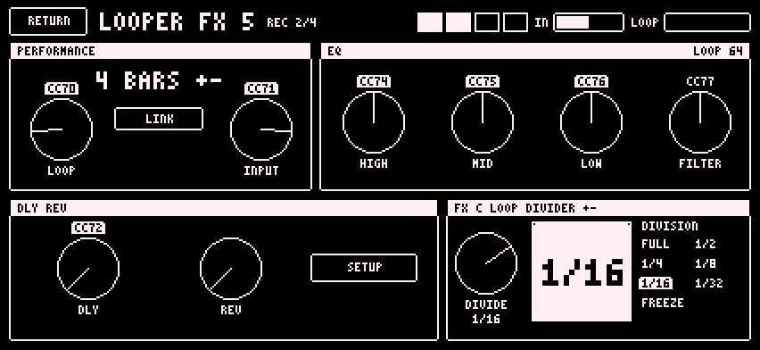
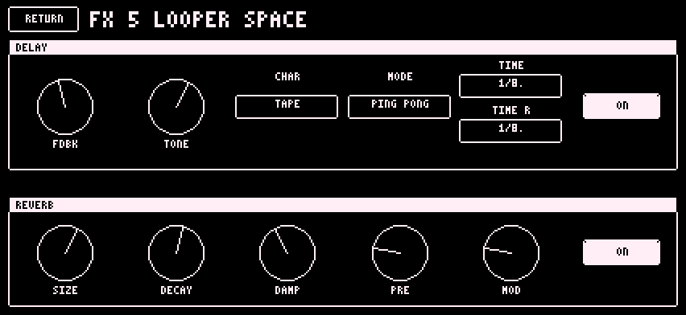

The looper is FX 5, on MIDI channel 13. It records the finished mix with the effects and plays the loop back after everything else. The Digitakt's clock and transport drive it. It has no clock of its own.

Further DIAL 1 moves only change the loop volume.
After a clear, DIAL 1 is refused until N new complete bars are captured. Live stays audible. Return DIAL 1 to zero first.
The loop is what you hear after DIAL 2. Nothing is captured while a loop is locked. The app's own USB return is never captured.
| Word | Meaning |
|---|---|
| LOOP REC (flashing) | Capturing, not ready |
| LOOP READY | N bars held |
| LOOP PLAY | A loop is locked. The divider division shows beside it: 1/1 to 1/32 or FREEZE. |
| RESET | Bar 1 was just set (about a quarter second) |
Three things set bar 1, each to the nearest beat. Each starts a fresh capture:
While a loop is locked, none of them touches it.
Stop fades the loop out. A second Stop while stopped is a panic. A tempo change resamples the loop, so its pitch changes. There is no overdub.
DLY: how much of the loop goes through the delay and reverb instead of dry. 0 is dry. 1 is effect only.
REV: how much of the delay feeds the reverb. 0 is clean echoes. 1 is echoes heard only through the reverb.
DLY and REV return to 0 when the loop clears. SETUP opens the delay and reverb settings. They do not change the SPACE box.

Routing A: DIAL 2 is one gain on everything live, the Digitakt included.
Routing B: DIAL 2 sets the phone's synths and also sends its level as CC 95 on the Digitakt track channels (default 1 to 8). DIAL 1 alone sends nothing. If CC 95 lowered the Digitakt's track levels, unplugging does not restore them. Restore them by hand.
Start, Stop and Program Change never change DIAL 2. A pattern change never replaces a locked loop.